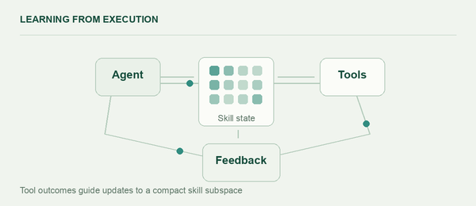
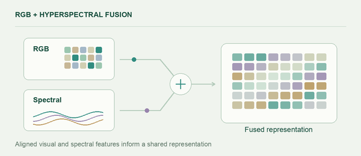
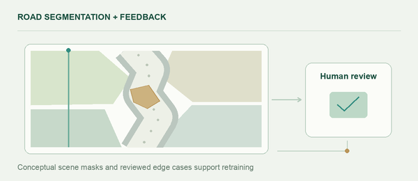
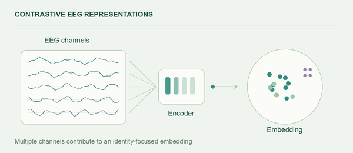
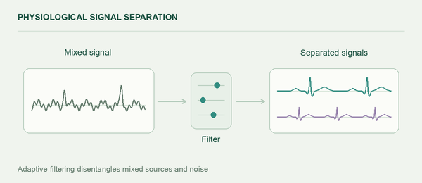
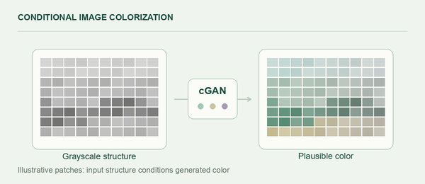
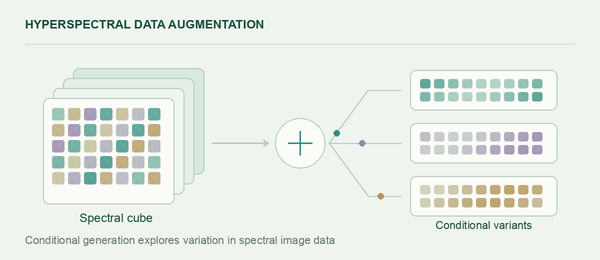
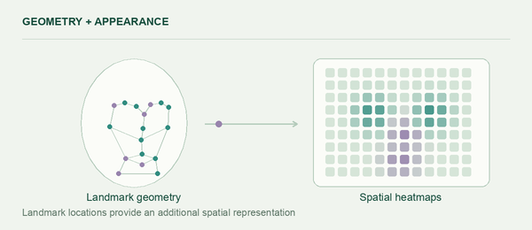
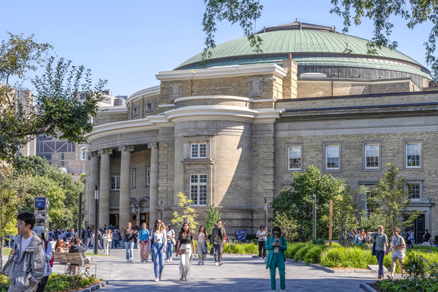
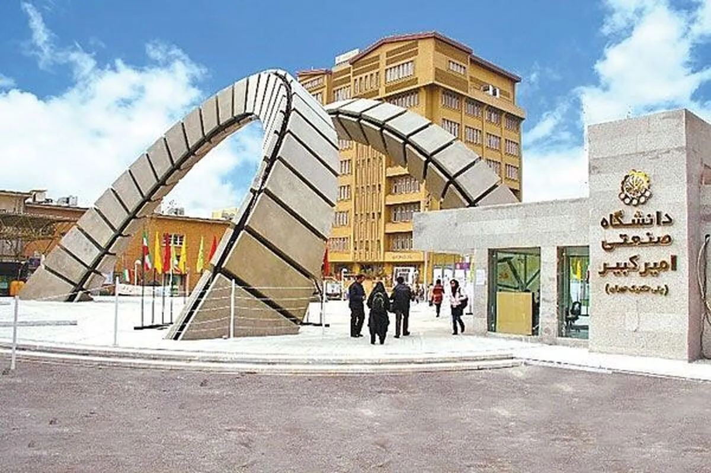

Evaluated research
Evaluated researchReproduction & extension
Compact skills for language-model agents
Reproduced SoftSkill on Qwen3-8B, evaluating how 32 learned vectors compare with a long text skill across accuracy, context use, and evaluation reliability.

AGENTIC AI · GENERATIVE AI · LLM RESEARCH
Efficient models.
Adaptive agents.
I research how language-model agents learn from execution feedback and how generative models can do more with less computation. I’m a Computer Science PhD student at the University of Waterloo, building on experience taking ML systems into production.
Toronto / Waterloo, Canada GitHub
Learning from feedback.
Doing more with less.
ACADEMIC & INDUSTRY EXPERIENCE
MY RESEARCH FOCUS
How can an agent turn execution feedback into a reusable skill? How can a generative model make better use of its computation? These questions guide my research.
I work across learned agent skills, compact memory, and efficient generation, connecting model research with the training, inference, and evaluation systems needed to test it.
RESEARCH & ENGINEERING
Explore my current work in agentic and generative AI, with earlier computer vision and biomedical research in dedicated tabs.
Learned skills, execution feedback, reusable memory, efficient generation, and retrieval-grounded applications.
Evaluated researchReproduction & extension
Reproduced SoftSkill on Qwen3-8B, evaluating how 32 learned vectors compare with a long text skill across accuracy, context use, and evaluation reliability.

Research prototypeIndustry agent research
Designed forward-only reinforcement learning with evolution strategies over a 512-dimensional skill subspace.
 In progress
In progressUniversity of Waterloo · Research
Adapting pretrained Qwen models for masked diffusion and parallel multi-token generation, while reusing existing model weights.
 Ongoing research
Ongoing researchUniversity of Waterloo · Research
Investigating gated low-rank updates to recurrent state so a frozen language model can carry useful task knowledge through tool use.
 Exploratory application
Exploratory applicationIndependent project
Built a document-retrieval project around PDF ingestion, a local vector store, and an API for retrieval-grounded applications.
 Research & benchmarking
Research & benchmarkingUniversity of Waterloo · Research
Developed and evaluated linear-attention variants, with reproducible latency/throughput measurements and GPU-aware implementations.

Production MLEnerSoft · Industry
Built RGB–hyperspectral perception systems and sensor-fusion workflows that reduced manual-review costs by $200K annually.

End-to-end model ownershipStrayos · Industry
Owned road-scene segmentation and anomaly detection from data curation to deployment, with human feedback driving model improvement.
 Published · PLOS ONE
Published · PLOS ONEUniversity of Toronto · Research
Developed a computational modeling and inference framework for short-term synaptic plasticity during deep brain stimulation.

ResearchBiomedical machine learning
Designed a contrastive learning objective for identity-discriminative EEG representations and genuine-user versus impostor separation.

Prototype & signal researchAcademic engineering projects
Combined adaptive filtering, Kalman methods, and wearable sensing across maternal–fetal ECG separation and an ECG–PPG prototype.

ExperimentDeep-learning coursework
Implemented a conditional GAN in PyTorch for image colorization, connecting representation learning with image-to-image generation.

Exploratory projectGenerative vision experiments
Explored conditional generative models for augmenting hyperspectral geological imagery used in perception workflows.

Implementation & ablationsOpen-source experiments
Combined RGB inputs and landmark heatmaps in face-recognition experiments, with pose, image quality, and baseline comparisons.
 Working implementation
Working implementationML engineering project
Packaged a vision model as a containerized FastAPI service with automated checks and reproducible deployment workflows.
EXPERIENCE & OWNERSHIP
A track record across model research, industrial perception, and the infrastructure that supports them.
Industry project experience
Researching how agents improve through learned skills and execution feedback, under constraints on compute and context.
AI Engineer · Computer Vision
Owned road-scene segmentation and anomaly detection from data curation through training, evaluation, and deployment.
Lead Data Scientist · Computer Vision
Built and deployed RGB–hyperspectral perception systems that reduced manual-review costs by $200K annually.
Data Engineer
Built the data infrastructure behind analytical workflows: Azure and SQL ETL pipelines, large-scale auditing, and Python dashboards.
PUBLICATIONS & MANUSCRIPTS
Published work and ongoing research, with each manuscript’s status kept explicit.
Published · PLOS ONE · 2022
Computational inference of short-term synaptic dynamics under stimulation.
Read paperSubmitted · IEEE T-BIOM
Connecting efficient models with biometric and biosignal authentication.
Manuscript in preparation
Collaborative research on EEG foundation-model representations.
Research in progress
Adapting pretrained language models for masked-diffusion generation.
THE FOUNDATIONS
A path from electrical and biomedical engineering to computer science and efficient AI.

PhD · Computer Science
Efficient language models, agent learning, and GPU-aware research.

M.Sc. · Biomedical Engineering
Stochastic modeling, machine learning, and neural dynamics.

B.Sc. · Electrical Engineering
Signal processing and physiological sensing.
AI IN FINANCE SUMMER SCHOOL · AUGUST 2026
Selected participant in AIFSS, presented by RBC Borealis in Vancouver; winner of the final participant hackathon challenge.
LET’S CONNECT
Working on agents, generative models, or efficient LLMs? I’d love to hear what you’re building or researching.